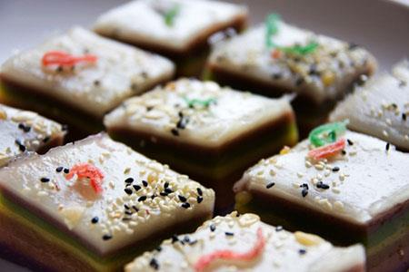
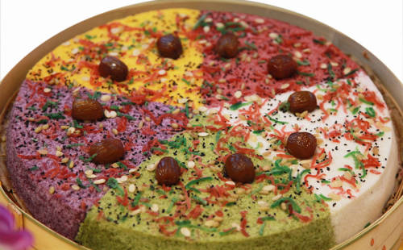

重阳节为什么要吃重阳糕？
吃重阳糕是由登高引申而来，重阳节又叫“登高节”。传说登高可以避祸。而不能登高或不想登高的人，就在家中吃糕。吃重阳糕源于“登高”的“高”，“糕”字与“高”同音，象征“步步高升”、“百事俱高”之意。
据史料记载，重阳糕，又称“花糕”、“发糕”或“菊糕”，是用发面做成的糕点，辅料有枣子、杏仁、松子、栗子，属于甜品，也有加肉做成咸味的。制作较为随意、简易。
讲究些的做成宝塔状、九层，上面再做两只小羊，以合“重九”、“重阳(羊)”之俗。有的在重阳糕上插上小彩旗，并点上蜡烛灯，用“点灯”、“吃糕”代替“登高”的意思，而小彩旗则隐喻为茱萸。
唐武则天曾在重阳时，令宫女广采百花，和米捣碎，蒸制“花糕”(如菊花糕、桂花糕等)，用以赐赏众臣，以笼络人心。明清时，重阳糕的制法更趋精细，种类也繁多，并且有了成人和儿童食品之分。据载：
“京师重阳花糕极胜。有油糖果炉作者，有发面垒果蒸成者，有江米黄米捣成者。小儿辈又以酸枣捣糕、火炙脆枣、糖拌果干、线穿山楂，绕街卖之。”
为什么重阳节流行吃“重阳糕”，大概有4种说法：一种是祛邪避灾。明人谢肇制在《五杂俎》中记述：“九月九日天明时，以片糕搭儿女头额，可迎福接吉，消灾避邪”；二是“登高”之意，以“吃糕”代替“登高”；三是敬老之举，江南流行一句话：“重阳不吃糕，老来与人告”；四是祝福之意，“重阳吃糕，百事俱高”。
过去，在重阳这一天，人们有蒸制重阳糕孝敬老人的习俗。重阳糕不仅自家食用，还馈送亲友，称“送糕”；又请出嫁女儿回家食糕，称“迎宁”。
这些糕中常加入有大枣、栗子、山楂等果干等为原料，既颜色好看，香甜可口，食之易消化，同时又能健脾益气。现在的重阳糕，没有固定品种，只要是在重阳节吃的松软糕类，都可称为“重阳糕”了。
重阳花糕的起源有一种来源甚早的说法。《南齐书》卷九上说，刘裕纂晋之前，有一年在彭城过重阳。一时兴起，便骑马登上了项羽戏马台。等他即位称帝后，便规定每年九月九日为骑马射箭、校阅军队的日子。据传说，后来流行的重阳糕，就是当年发给士兵的干粮。
另一种传说则流传于陕西附近。传说明朝的状元康海是陕西武功人。他参加八月中的乡试后，卧病长安，八月下旨放榜后，报喜的报子兼程将此喜讯送到武功，但此时康海尚未抵家。家里没人打发赏钱，报子就不肯走，一定要等到康海回来。等康海病好回家时，已经是重阳节了。这时他才打发报子，姶了他赏钱，并蒸了一锅糕给他回程作干粮。又多蒸了一些糕分给左邻右舍。因为这糕是用来庆祝康海中状元，所以后来有子弟上学的人家，也在重阳节蒸糕分发，讨一个好兆头。重阳节吃糕的习俗就这样传开来了。